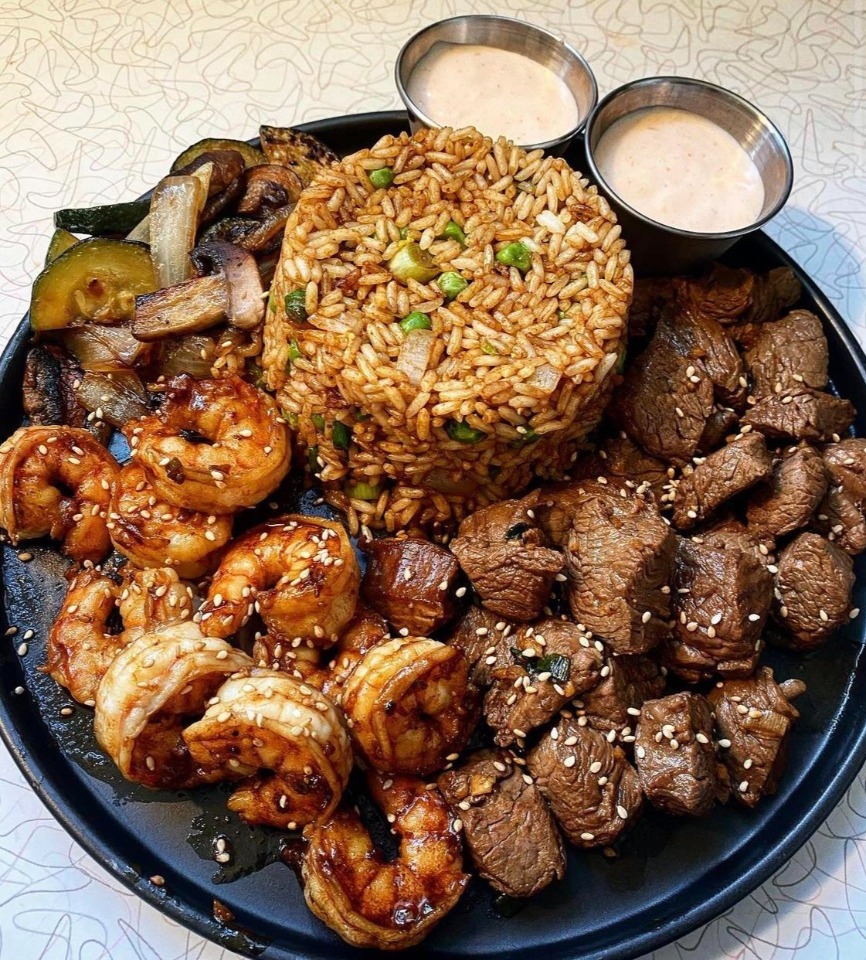
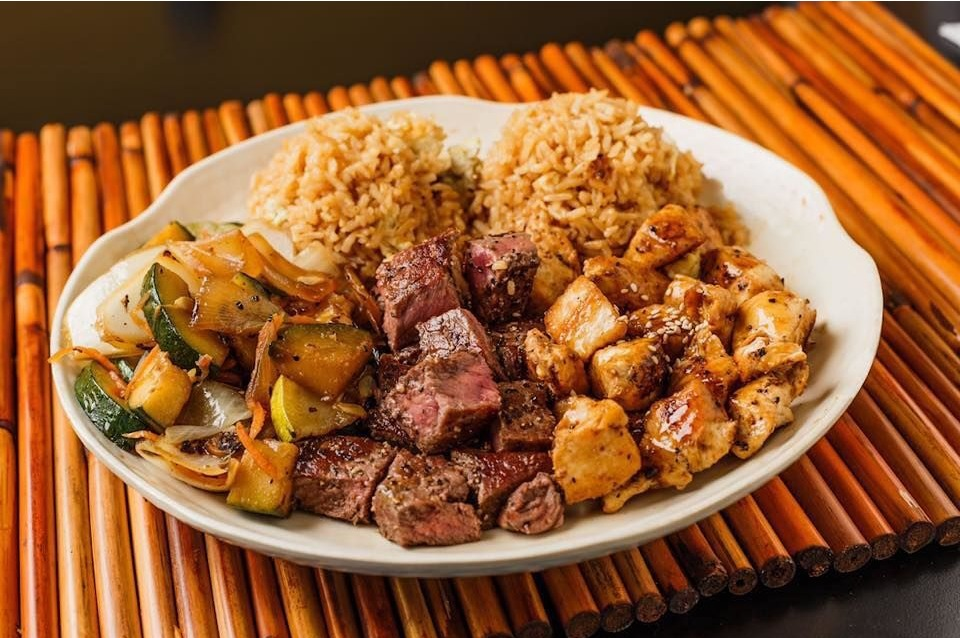

Food & Drink Recommendations
Happy Bowl UNCG
Happy Bowl UNCG offers a diverse selection of fresh and healthy bowls crafted with locally sourced
ingredients.
Located on campus, this spot is perfect for a wholesome meal between classes.
Rating: 4.2 stars
Address: 1201 W Gate City Blvd #102, Greensboro, NC 27403
Hours: Mon: 11 AM–9:30 PM, Tue: 11 AM–9:30 PM, Wed: 11 AM–9:30 PM, Thu:
11 AM–9:30 PM, Fri: 11 AM–9:30 PM, Sat: 1:30–9 PM, Sun: 12–9 PM
Phone: (336) 365-8888
Price per person: $10–20

Hibachi Steak & Shrimp - $10.75
Fried Rice Bowl with Thai Chicken - $7.95

Hibachi Chicken & Steak - $10.25
East Coast Wings
East Coast Wings is known for its delicious, saucy wings and a laid-back atmosphere.
Just a short walk from campus, they serve both traditional and boneless wings.
Rating: 3.0 stars
Description: American grill chain specializing in chicken wings in many flavors
& levels of heat.
Service Options: Has outdoor seating · Good for watching sports · Has Wi-Fi
Address: 338 Tate St, Greensboro, NC 27403
Hours: Mon–Fri: 11 AM–10 PM, Sat: 12–10 PM, Sun: 12–10 PM
Phone: (336) 398-9464
Price per person: $10–20
Panda Express Greensboro
Panda Express in Greensboro brings a taste of Chinese fast-food favorites right to campus.
Their modern twist on classic dishes is perfect for a quick, satisfying meal.
Rating: 1.8 stars (Note: The stars are not fully accurate given there are only 4
reviews; food was good in my opinion.)
Address: Panda Express/Spartan Dining, 1209 North Dr, Greensboro, NC 27412
Hours: Mon: 11 AM–8:30 PM, Tue–Thu: 11 AM–9 PM, Fri: 11 AM–7 PM, Sat: Closed, Sun:
4–9 PM
Phone: (336) 465-0126
Price per person: $20–30

Orange Chicken